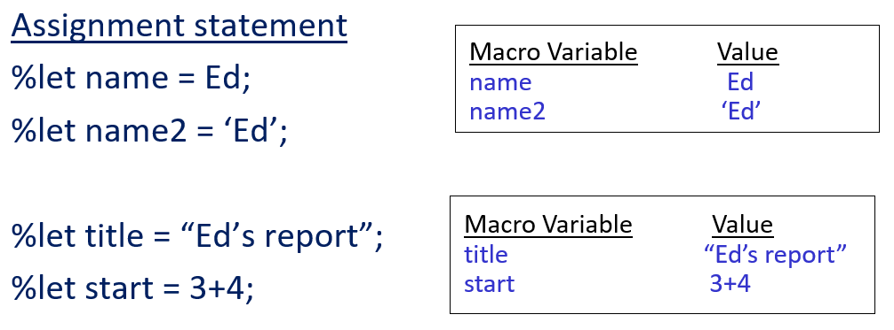
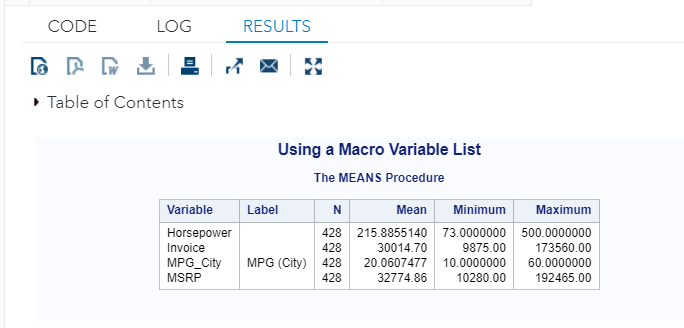
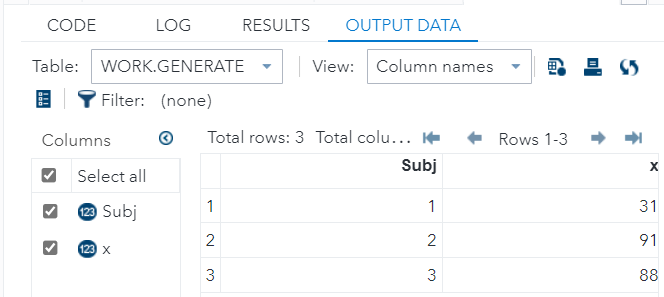
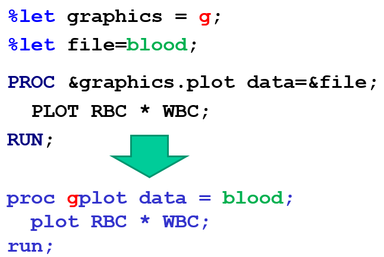
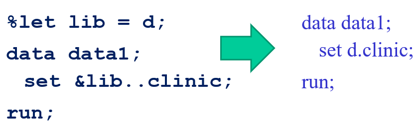
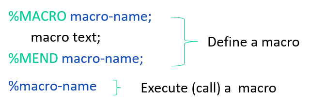
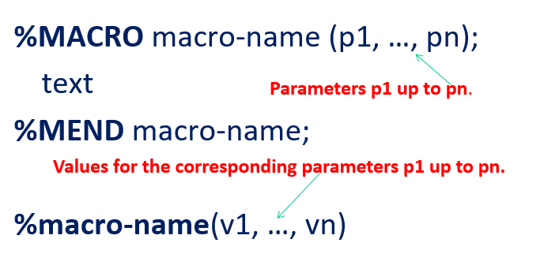
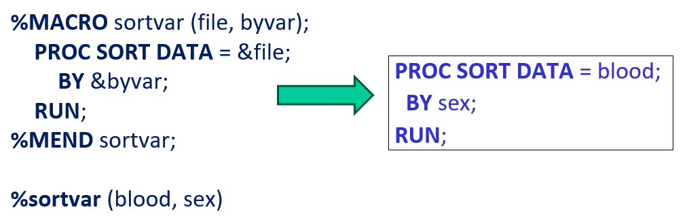
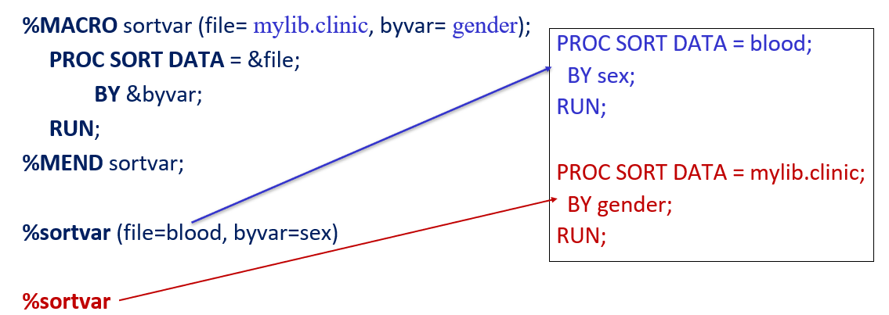
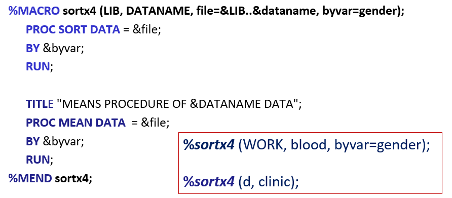

Chapter 15 Basics of SAS MACRO
The SAS Macro language is another language that rests on top of regular SAS code. It allows us to assign a name to groups of SAS programming statements. From that point on, we can work with the name rather than with the text itself.
Macros are particularly useful if we want to make your SAS programs more flexible and allow them to be used in different situations without having to rewrite entire programs
The programmatic role of SAS MACROs is similar to functions/routines in other programming languages. Whenever there are repetitive data and analytic tasks in SAS coding, we need MACROs.
SAS MACROs consist of collections of
- regular SAS program statements,
- macro variables,
- macro statements and
- macro functions that are contained within a %MACRO and a %MEND.
15.1 MACRO Variables
SAS MACRO variables can be defined and used anywhere in a SAS program, except data lines (i.e. raw data). A MACRO variable contains one value that remains constant until explicitly changed. We can also consider a MACRO variable as a string replacement method!
15.1.1 Defining MACRO Variables
There are a number of SAS system-defined MACRO variables. User-defined MACRO variables are based on the syntax given below.
%LET macrovar = value;macrovar: MACRO variable name that follows the regular SAS naming conventionsvalue: any string or macro expression- stored as a character type
- length 0-32k characters
- Math expressions are not evaluated
- Quotations not needed
- Leading/trailing blanks in the value must be removed
Examples of MACRO Variables

15.1.2 Use of MACRO Variables
To use a macro variable, precede the macro variable name with an ampersand (&), something like ¯ovar.
¯ovar will be replaced with whatever text was assigned to the MACRO variable.
Example We still use the Cars data in the SASHELP library.
%LET var_list = Horsepower Invoice MPG_City MSRP;
TITLE "Using a Macro Variable List";
PROC MEANS DATA = SASHELP.Cars n mean min max ;
VAR &var_list; /* calling MACRO variable */
RUN;
In the code, &var_list was replaced with Horsepower, nvoice, MPG_City, MSRP.

Example 2 Random number generation.
%LET n = 3;
DATA generate;
DO Subj = 1 TO &n; /* &n = 3 */
x = int(100*RANUNI(0) + 1); /* ranuni(0): 0 is seed */
OUTPUT;
END;
RUN;The output is

15.1.3 Combining Macro Variables with Text
MACRO variables can be appended to text or variable names:
varname¯ovarOr prepended:
¯ovar.textWe need to insert a . between the macro variable and the text so SAS knows where the text begins.
Or connected to other macro variables:
&macvar1&macvar2The following example explains the above concept.

Example 3 When concatenating a data set to a macro variable containing the libname, you need to use double decimal points instead of one.

15.2 SAS MACRO
“A macro is stored text identified by a name.”
It is used for
- generating repetitive pieces of SAS code;
- conditionally executing code.
The definition of MACRO begins with a %MACRO statement and ends with a %MEND statement. Coding beginning with % signs is evaluated by the macro processor.

%MACROmacro-name: begins the macro definition and assigns a name to the macromacro text
- any text
- regular SAS statements or steps
- macro variables, functions, or statements
- combination of the above
%MENDmacro-name: ends the macro definition.macro-nameis optional.
Comments on MACRO Name: A MACRO name must satisfy the following conditions
- not an SAS statement, therefore, doesn’t require a semi-colon
- can be placed anywhere in a program except in data lines
- Submitting a macro definition complies with the macro.
- If the macro compiles successfully, SAS will run the generated SAS code.
There are two major types of MACROs: with and without parameters. The following MACRO does have parameters to pass into.
Example 4: MACRO with no parameters to pass in.
/* Define MACRO variable*/
%LET a = blood;
%LET x = sex;
/* Define a MACRO */
%MACRO sortx;
PROC SORT DATA = &a;
BY &x;
RUN;
PROC MEANS DATA = &a;
BY &x;
RUN;
%MEND sortx;
/* Call MACRO*/
%sortx;
15.3 MACROs with Parameters
We can use %LET statement to define a MACRO variable. Another way to define the MACRO variable is to use parameters.
Parameters pass variable values to macros in the form of MACRO variables. There are 2 types of parameters:
- positional
- keyword
15.3.1 Positional Parameter
In positional parametric MACROs, the order of the parameters in the definition of MACRO MUST BE IDENTICAL to the one in the MACRO call.

The parameter list is defined in the %MACRO statement and contains names of macro variables referenced only within the macro. To call this macro and provide values for the macro parameters you list the values you want to substitute for each parameter in the macro call statement. Values are substituted for the parameter variables using a one-to-one correspondence.
%MACROmacro-name(p1, …, pn);- enclosed in parentheses
- separated with commas
- Following SAS naming conventions
- referenced as a macro variable within the macro (&p1, &p2, etc )
- Macro call values: %macro-name(v1, …, vn)
- enclosed in parentheses
- separated with commas
- are substituted for the parameters using a one-to-one correspondence v1 ==> p1
- Use commas as placeholders to substitute a null value for positional parameters.

15.3.2 Keyword Parameter
We have used this type of MACRO when generating styled ODS tables and SG graphics in early chapters. The following pseud-code outlines the definition of this type of MACRO.
/* Definition */
%MACRO macro-name (KEY1=, ...,KEYn=);
text (data, procedure steps, or other commands, )
%MEND macro-name;
/* MACRO call*/
%macro-name (KEY1=val1, ...,KEYn=valn)
The keyword parameters are defined in the %MACRO statement. KEYn is the name of the macro variable followed by an
=. VALUE is the default value assigned to the macro variable.To call this macro and substitute different values you must indicate the macro variable (KEYn) followed by an
=and the value you want to substitute. You can specify keyword parameters in any order. Parameters not defined are assigned the default value.
Comments on the Definition:
Macro parameters:
%MACROmacro-name(KEY1=value, …, KEYn=value);enclosed in parentheses, separated by commas
assigned a default value (null is allowed)
referred to as a macro variable within the macro (&KEYn)
keyword complies with SAS naming conventions
Macro call values: %macro-name (KEY1=value, …, KEYn=value)
- enclosed in parentheses, separated by commas
- can be null values, text, macro variable references
- can be listed in any order
- can be omitted from the call (default used)
The example shows the definition of MACRO with parameters and MACRO calls.

15.3.3 Mixed Parameter List
Although it is unnecessary to define mixed parametric MACRO from a practical perspective, it is still a valid MACRO.
The following pseudo-code defines a MACRO with mixed parameter inputs.
%MACRO macro-name (p1, …, pn, key=value, …,key=value);
text
%MEND macro-name;
%macro-name (v1, …, vn, key=value, …, key=value)
Note that all positional parameters must be listed in order before any keyword parameters.

15.4 Learning Coding by Examples
This section contains more examples of SAS MACROs using direct input small data sets.
/**********************************************************
Topics 1: Introduction
2: MACRO variable
3: General MACRO
4: MACRO with Parameters
***********************************************************/
OPTIONS PS = 26 LS = 72 NODATE NONUMBER;
TITLE "";
FOOTNOTE "";
/** Working Data Set **/
DATA MODELS;
INFILE DATALINES;
INPUT Model $ 1-12 Class $ Price Frame$ 28-38;
DATALINES;
Black Bora Track 796 Aluminum
Delta Breeze Road 399 CroMoly
Jet Stream Track 1130 CroMoly
Mistral Road 1995 Carbon Comp
Nor'easter Mountain 899 Aluminum
Santa Ana Mountain 459 Aluminum
Scirocco Mountain 2256 Titanium
Trade Wind Road 759 Aluminum
;
RUN;
/*****************************************************************
Topic #1: Introduction
Q. What is SAS MACRO?
A. A SAS MACRO is a SAS facility of text replacement.
There are two SAS MACROs: MACRO variable and MACRO program
A SAS MACRO Variable replaces the small scale of texts in SAS programs.
A SAS MACRO Program replaces large-scale texts in SAS programs.
Macro triggers: & %
& - Macro variable resolution
% - Macro invocation
%LET statement - defining a SAS MACRO variable
%MACRO macro_program_name(list of parameters);
Text replacement/text filler...
%MEND macro_program_name;
Note: Macro naming convention - can be up to 32 characters in length.
******************************************************************/
/** Example 1: explicit definition of SAS MACRO variable using %LET statement.**/
%LET my_macro_var1 = 3+4; /* plain text value */
%LET my_macro_var2 = '3+4'; /* string with single quote */
%LET my_macro_var3 = " 3+4 "; /* string with double quote */
/** **/
DATA TEST_MACRO_VAR;
my_var = 3 + 4;
macro_var1 = &my_macro_var1; /* &my_macro_var1 = 3 + 4 */
macro_var2 = &my_macro_var2; /* &my_macro_var1 = '3+4' */
macro_var3 = &my_macro_var3; /* &my_macro_var1 = "3+4" */
RUN;
PROC PRINT DATA = TEST_MACRO_VAR;
RUN;
PROC CONTENTS DATA = TEST_MACRO_VAR;
RUN;
/** Example 2: text/string replacement in titles and footnotes **/
/** Calling a macro in a string such as in title and footnote, double
quote must be used to resolve the value of the MACRO variable. **/
PROC PRINT DATA = TEST_MACRO_VAR;
TITLE1 "1-Calling macro_var1 (single-quote): &my_macro_var1";
TITLE2 '2-Calling macro_var1 (single-quote): &my_macro_var1';
TITLE3 "3-Calling macro_var2 (double-quote): &my_macro_var2";
TITLE4 '4-Calling macro_var2 (single-quote): &my_macro_var2';
TITLE5 "5-Calling macro_var3 (double-quote): &my_macro_var3";
TITLE6 '6-Calling macro_var3 (single-quote): &my_macro_var3';
RUN;
/**********************************
Topic #2: MACRO Variable
***********************************/
%LET bikeclass = Mountain; /* Definition of MACRO variable */
/** Example 1: Subsetting without using MACRO variable **/
PROC PRINT DATA = models NOOBS;
WHERE Class = 'Mountain';
FORMAT Price dollar6.;
TITLE "Current Models of Mountain Bicycles 01";
RUN;
/** Example 2: Use a macro variable - bikeclass **/
PROC PRINT DATA = models NOOBS;
WHERE Class = "&bikeclass";
FORMAT Price dollar6.;
TITLE "Current Models of &bikeclass Bicycles 02";
RUN;
/** Example 3. Make a title macro variable **/
%LET mytitle = STA311 Week #14 SAS Code;
PROC PRINT DATA = MODELS;
TITLE &mytitle;
RUN;
/***************************************
Topic 3: MACRO with no Parameter
This MACRO is useful when a chunk of code
appears repeatedly in the program.
The general form of a macro is
%MACRO macro-name;
macro-text
%MEND macro-name;
****************************************/
/** Example 1: When we develop a SAS program, we frequently print out the
most created data set to check the correctness of the code. Normally we
write a PROC PRINT step to see the content of the most recently created
data. We can write a SAS MACRO to avoid writing the PROC PRINT every time.
**/
%MACRO printit; /* open the macro statement*/
DM CLEAR OUT;
PROC PRINT;
TITLE 'Most Currently Created Data';
RUN;
TITLE "";
%MEND printit; /* close the macro statement*/
/** create a SAS data set and then use %printit to print it out **/
DATA testdat;
var1 = 123;
var2 = "123";
RUN;
%printit;
PROC CONTENTS DATA = testdat;
RUN;
/** Example 2. set of MACRO statements **/
DATA myDATA;
INPUT var1 var2 var3;
DATALINES;
1 3 6
4 3 9
6 5 2
12 4 5
;
RUN;
%printit;
/** macro for variable transformation **/
%MACRO comput;
var4 = var1 + var2;
var5 = var1 - var2;
var6 = var1 + var2 + var3;
%MEND comput;
DATA MyNEWData;
SET myDATA;
%comput;
RUN;
%printit;
/***********************************
Topic 4: MACRO with parameters
************************************/
/** Think about sorting different variables in the
data set and then print it out. For each printout, we
want to add titles with information on sorting
variables.
To avoid writing multiple procedures due to sorting
the data with different variables, we can SAS MACRO.
Two types of MACRO parameters: Positional and Keyword
(1) Positional: %MACRO macro_name(sortseq, sortvar)
(2) Keyword: %MACRO macro_name(sortseq =, sortvar =)
**/
/** Working Data Set **/
DATA MODELS;
INFILE DATALINES;
INPUT Model $ 1-12 Class $ Price Frame$ 28-38;
DATALINES;
Black Bora Track 796 Aluminum
Delta Breeze Road 399 CroMoly
Jet Stream Track 1130 CroMoly
Mistral Road 1995 Carbon Comp
Nor'easter Mountain 899 Aluminum
Santa Ana Mountain 459 Aluminum
Scirocco Mountain 2256 Titanium
Trade Wind Road 759 Aluminum
;
RUN;
/** Example 1: MACRO with positional parameter **/
%MACRO PositionalSortPrint(sortseq, sortvar, out);
PROC SORT data = MODELS out = models&out;
by &sortseq &sortvar;
RUN;
PROC PRINT data = models&out noobs;
title1 'Current Models:';
title2 "Sorted by &sortseq &sortvar: OUTPUT&out";
var Model Class Frame Price;
format price dollar6.;
RUN;
%MEND PositionalSortPrint;
%PositionalSortPrint(DESCENDING, Price, 01)
%PositionalSortPrint(Price, DESCENDING, 02) /* order of values were messed up!!!! */
%PositionalSortPrint( , Price, 03)
%PositionalSortPrint( , Class, 04)
%PositionalSortPrint( DESCENDING, Class, 05)
/** Example 2: MACRO with keyword parameter **/
%MACRO KeywordSortPrint(sortseq =, sortvar =, out = );
PROC SORT data = models out = models&out;
by &sortseq &sortvar;
RUN;
PROC PRINT data = models&out noobs;
title 'Current Models';
title2 "Sorted by &sortseq &sortvar: OUTPUT&out";
var Model Class Frame Price;
format price dollar6.;
RUN;
%MEND KeywordSortPrint;
%KeywordSortPrint(sortseq = Descending, sortvar = Price, out = 06)
%KeywordSortPrint(sortseq =, sortvar = Price, out = 07)
%KeywordSortPrint(sortvar = Price, sortseq = Descending, out = 08)